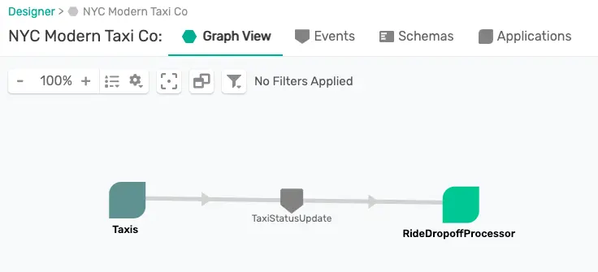
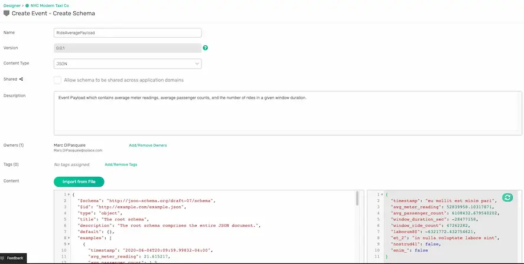
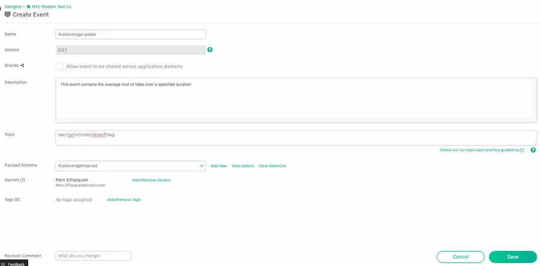
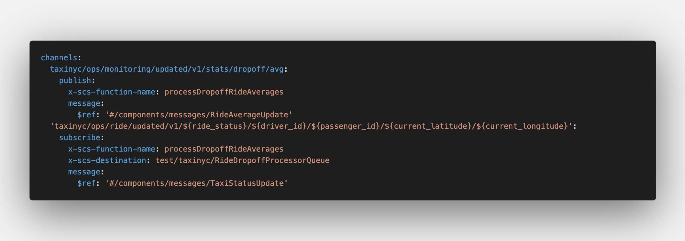
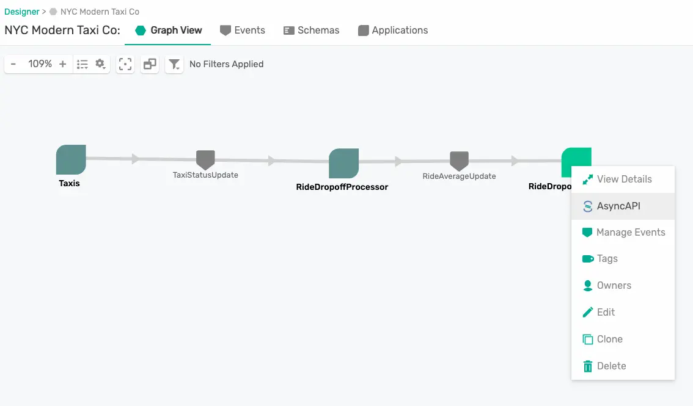
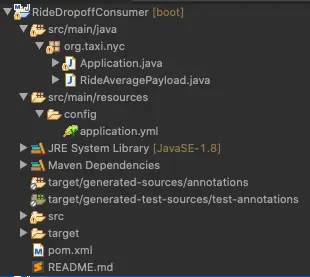

🚀 Welcome to this Developer Workshop! 🚀
During this workshop we're going to use a real-world use case to explore some new technologies. We'll jump into our use case more in a little bit (hint: 🚕 🚖 🚕 ) but first let's introduce the 3 main technologies you'll be learning during this workshop.
- 💥 You'll be using the Solace PubSub+ Event Portal to design the Event-Driven Architecture for our use case. While you're likely not working as a team during this workshop think about how a tool like this would be useful as you collaborate with your team on a day to day basis to designing your architecture, implement it, and iteratively make enhancements and changes throughout your software development cycle.
- 💥 Second you'll be learning about the AsyncAPI Initiative and the Generators that make our lives as developers simpler.
- 💥 Lastly, you'll develop event-driven microservices that implement our use case using the Spring Cloud Stream framework.
Oh, and of course you'll also be using some Java and Solace PubSub+ Event Brokers but those aren't the ⭐️ of the show today. No worries if you're not an expert in either :)
So let's get started!
You are a member of the engineering team at the NYC Modern Taxi Co, a fictional taxi cab company based in New York City. Your team is playing from behind and racing to catch up with technology innovation introduced to the industry by Rideshare competitors such as Uber and Lyft. In order for the company to survive and eventually thrive your team has convinced the board that transforming the companies' IT systems is of utmost importance. Your team has done it's research and determined that moving to an Event-Driven Architecture is essential to future rapid innovation and has already kicked this initiative off by deploying a Solace Event Mesh and updating the taxi fleet to stream real-time events that include ride and location information. We know what the fleet is up to! Now it's time to start to continually improve and provide a world class customer experience.
In order to react in a real-time manner the team has decided that we want to process the updates as they stream in from the fleet of taxis instead of putting them directly into a datastore and then having to retrieve them to do processing later. To prototype this work, you'll see a high level design in the diagram below. Since we already have the taxi fleet streaming their updates into our PubSub+ Event Mesh we need to do three things:
- 🚖 Capture this high level design in the PubSub+ Event Portal where we can define our Event-Driven Architecture, including its' components: Applications, Events and Schemas. This will allow us to define the details needed to implement, visualize and extend the architecture as it evolves, and share/collaborate with our entire engineering team as we continue to innovate.
- 🚕 Next up we're going to create the RideDropoffProcessor microservice which will subscribe to the stream of dropoff taxi updates from the fleet, capture events for a specified time window (we'll use 20 seconds to make it easy), calculate the averages, and publish a new RideAverageUpdate event for each window.
- 🚖 Lastly we'll create a RideDropoffConsumer that receives the stream of RideAverageUpdate events and captures them for display and further processing.

🛠 This page covers the setup needed to perform this codelab. 🛠
AsyncAPI Generator Requirements
✅ Install instructions available here
- Node.js v12.16+ (Check version using
node -v) - npm v6.13.7+ (Check version using
npm -version)
We'll install the generator itself later 👍
Spring Cloud Stream Requirements
✅ Spring Cloud Stream just requires Java and Maven to use 🚀
- Java 1.8+ (Check version using
java -version) - Maven 3.3+ (Check version using
mvn -version)- On mac you can
brew install maven - Other install instructions here
- On mac you can
- Your favorite Java IDE 💥
PubSub+ Event Broker Connection Info
✅ The credentials below are for a public event feed found on the Solace feed Marketplace that we'll use during this codelab.
- SMF Host:
tcp://taxi.messaging.solace.cloud:55555 - Message VPN:
nyc-modern-taxi - Username:
public-taxi-user - Password:
iliketaxis
✅ Note that this client-username has permissions to subscribe to taxinyc/> and test/taxinyc/> and permissions to publish to test/taxinyc/>
Prepare PubSub+ Event Portal
Sign-up for Solace Cloud
✅ If you already have a Solace Cloud account just login, otherwise please sign-up for a free Solace Cloud Account using this link. Note that no credit card is required. You will receive an email to activate the account and will then be prompted to start the free trail.

Import Application Domain
✅ Download the Application Domain export file: EventPortal_Export_NYCModernTaxiCo.json
You can download the file via curl or by cloning the git repo
curl -k -XGET https://raw.githubusercontent.com/Mrc0113/design-to-code-workshop/master/EventPortal_Export_NYCModernTaxiCo.json -o EventPortal_Export_NYCModernTaxiCo.json
OR
git clone https://github.com/Mrc0113/design-to-code-workshop.git
✅ Inside of your logged into Solace Cloud Account navigate to the Event Portal Designer by clicking "Designer" in the menu on the left.

✅ Then import the previously downloaded Application Domain file by clicking the Import button at the top right of the Designer and importing the file.

🚀 Setup complete! Let's get going! 🚀
Now that you're familiar with the use case 🚕 🚖 🚕 and you've imported the application domain into the Event Portal, let's update our Event-Driven Architecture (EDA).
Open the NYC Modern Taxi Co Application Domain that you previously imported in the Event Portal Designer. You should see a Taxis Application which publishes TaxiStatusUpdate Events. We want to extend this architecture to match the design discussed for in our use case.

Add the RideDropoffProcessor Application
The first step towards doing this is to add the RideDropoffProcessor. To do this right click on the graph and choose Create Application.
Fill in the fields as follows:
- Name: RideDropoffProcessor
- Description: This is a Spring Cloud Stream microservice that will consume the TaxiStatusUpdates with a ride status of "dropoff", process the events, and output summary events.
- Leave Application Class as "Unspecified"
- Click Add/Remove Owners and choose yourself
- Click Add/Remove Tags and add "SCSt" as a tag. This tag is short for "Spring Cloud Stream" which is the framework we will use to develop our microservice later.
- Click the Manage button, search for "TaxiStatusUpdate" and click Sub next to it. This means that your application will subscribe to these events.
- Click the Save Button
✅ You should now see your RideDropoffProcessor added to the graph.

Add the RideAverageUpdate Event
It's great that the RideDropoffProcessor is now consuming the TaxiStatsUpdate events, but we want it to process those events and publish RideAverageUpdate events. To show this we need to create the RideAverageUpdate event and the schema which defines it's payload.
Right click on the graph and choose Create Event
Fill in the fields as follows:
- Name: RideAverageUpdate
- Description: This event contains the average cost of rides over a specified duration
- Topic Scheme: Solace (AMQP, REST, SMF)
- Topic: taxinyc/ops/monitoring/updated/v1/dropoff/avg
- Click Add/Remove Owners and choose yourself
- For Payload Schema click Add New
Since our data is JSON we'll define a JSON Schema to define our event payload.
Fill in the fields as follows:
- Name: RideAveragePayload
- Description: Event Payload which contains average meter readings, average passenger counts, and the number of rides in a given window duration.
- Content Type: JSON
- Click Add/Remove Owners and choose yourself
- Under Content paste the JSON schema in the code block below. This schema was generated from a sample message using jsonschema.net
- Click Save
{
"$schema": "http://json-schema.org/draft-07/schema",
"$id": "http://example.com/example.json",
"type": "object",
"title": "The root schema",
"description": "The root schema comprises the entire JSON document.",
"default": {},
"examples": [
{
"timestamp": "2020-06-04T20:09:59.99832-04:00",
"avg_meter_reading": 21.615217,
"avg_passenger_count": 1.5,
"window_duration_sec": 300,
"window_ride_count": 5
}
],
"required": [
"timestamp",
"avg_meter_reading",
"avg_passenger_count",
"window_duration_sec",
"window_ride_count"
],
"additionalProperties": true,
"properties": {
"timestamp": {
"$id": "#/properties/timestamp",
"type": "string",
"title": "The timestamp schema",
"description": "An explanation about the purpose of this instance.",
"default": "",
"examples": [
"2020-06-04T20:09:59.99832-04:00"
]
},
"avg_meter_reading": {
"$id": "#/properties/avg_meter_reading",
"type": "number",
"title": "The avg_meter_reading schema",
"description": "An explanation about the purpose of this instance.",
"default": 0.0,
"examples": [
21.615217
]
},
"avg_passenger_count": {
"$id": "#/properties/avg_passenger_count",
"type": "number",
"title": "The avg_passenger_count schema",
"description": "An explanation about the purpose of this instance.",
"default": 0.0,
"examples": [
1.5
]
},
"window_duration_sec": {
"$id": "#/properties/window_duration_sec",
"type": "integer",
"title": "The window_duration_sec schema",
"description": "An explanation about the purpose of this instance.",
"default": 0,
"examples": [
300
]
},
"window_ride_count": {
"$id": "#/properties/window_ride_count",
"type": "integer",
"title": "The window_ride_count schema",
"description": "An explanation about the purpose of this instance.",
"default": 0,
"examples": [
5
]
}
}
}

✅ We have now created a new payload schema and the schema has automatically been added to our event.

✅ Go ahead and click Save to complete the creation of our RideAverageUpdate event.
Update RideDropoffProcessor to publish RideAverageUpdate Events
Now that we've created our RideAverageUpdate event and defined it's payload we need to update the RideDropoffProcessor to publish it.
To do this follow these steps:
- Right click on the RideDropoffProcessor and choose Manage Events
- Search for "RideAverageUpdate" and click "Pub" next to it since the RideDropoffProcessor needs to publish these events.
- Click Save
✅ The RideDropoffProcessor is now complete and you should see it both consuming and publishing events!

🚕 Let's go ahead and develop the first app! 🚕
Now that we've defined the architecture for our use case in the Event Portal we're ready to write some code! But we don't want to have to write everything from scatch so we're going to use the AsyncAPI Generator
In order to use the AsyncAPI Generator we first need to install the CLI.
If you have the prequisites installed as defined earlier in the "What You'll Need" section you should be able to pop open your terminal and use the command below to install the CLI.
npm install -g @asyncapi/generator@0.53.1
🚕 🚖 🚕 🚖 🚕 🚖 🚕 🚖 🚕 🚖 🚕 🚖 🚕 🚖 🚕 On to developing the RideDropoffProcessor microservice. As we mentioned during design we want to implement this app using the Spring Cloud Stream framework. For more information on the framework the reference guide is an excellent resource!
Generate the Code Skeleton
In the Solace Event Portal right click on the RideDropoffProcessor, Choose AsyncAPI, Choose YAML and click Download

Open & check out the downloaded AsyncAPI document.
It should include a lot of the information about the app that we defined via the Event Portal, including:
- The title and description under the info section
- Our events, referred to as message in the AsyncAPI document
- The schemas that define the payloads of our events
- The channels on which the events are exchanged

Let's add a few of the template's configuration options to the download AsyncAPI document.
- Add
x-scs-function-name: processDropoffRideAveragesunder the subscribe operation and the publish operation under our two channels. By adding this you are telling the generator the name of the function you would like to handle events being exchanged and by adding the same function-name for both the subscribe and the publish operation you are saying you want them handled by the same function! - Add
x-scs-destination: test/taxinyc/RideDropoffProcessorQueueunder the subscribe operation. By adding this and using the Solace binder you are specifying the durable queue name if you're using a Consumer Group, or part of the temporary queue name if you're not. This will also add a topic subscription matching the channel specified in the Asyncapi document to the queue.
✅ After adding those configuration options your channels section of the AsyncAPI document should look like the image below. 
Our AsyncAPI document is now ready to generate the actual code so go over to your terminal and enter the command in the code snippet below.
Note the different pieces of the command:
agis the AsyncAPI Generator command-ois the output directory-pallows you to specify parameters defined for the template you're usingbinderis the Spring Cloud Stream binder you wish to use, in this case Solacereactive=trueallows you to use a reactive programming styleartifactId&groupIdconfigure Maven params of the same namesjavaPackagespecifies the Java Package to place the generated classes intohost,username,passwordandmsgVpnallow you to set binder connection information.- The yaml file is our AsyncAPI document
- And lastly, the
@asyncapi/java-spring-cloud-stream-templateis the AsyncAPI generator template that we are using.
ag -o RideDropoffProcessor -p binder=solace -p reactive=true -p artifactId=RideDropoffProcessor -p groupId=org.taxi.nyc -p javaPackage=org.taxi.nyc -p host=taxi.messaging.solace.cloud:55555 -p username=public-taxi-user -p password=iliketaxis -p msgVpn=nyc-modern-taxi ~/Downloads/RideDropoffProcessor.yaml @asyncapi/java-spring-cloud-stream-template
✅ After running the command you should see output that ends with where you can find your generated files.
Done! ✨
Check out your shiny new generated files at /private/tmp/codelab/RideDropoffProcessor.
💥Boom💥 We've generated our code skeleton!
Import and Explore the Generated Project
The generated project is a Maven project so head over to your IDE and import the project so we can add our business logic. Once imported you should see something like the image below.

A few notes on the project:
- The generated java classes are in the
org.taxi.nycpackage that we specified. - The
RideAveragePayloadandTaxiStatusUpdatePayloadPOJOs were generated from the schemas defined in our AsyncAPI document and includes getters/setters/toString/etc. Application.javacontains aprocessDropoffRideAveragesmethod which takes in aFlux<TaxiStatusUpdatePayload>and outputs aFlux<RideAveragePayload>. Note the use ofFluxsince we specifiedreactive=truewhen generating the code skeleton.- The
application.ymlfile contains the Spring configuration which tells our app how to connect to Solace using the SCSt binder as well as which message channels to bind our methods to. - The
pom.xmlfile contains the dependencies needed for the microservice. These include thesolace-cloud-starter-stream-solacedependency which allows you to use the Solace SCSt. Binder.
Subscribe to dropoff events
As of the writing of this codelab, dynamic topics are not yet supported by the Event Portal or the AsyncAPI Code Generator template. Because our Taxis are publishing their TaxiStatusUpdate events to a dynamic topic structure of taxinyc/ops/ride/updated/v1/${ride_status}/${driver_id}/${passenger_id}/${current_latitude}/${current_longitude} we need to update the application.yml file to subscribe to only dropoff events. To do this change the queueAdditionalSubscriptions parameter value to taxinyc/ops/ride/updated/v1/dropoff/>
Publish to a personalized topic for uniqueness
Because there are potentially multiple people using a shared broker participating in this codelab at the same time we need to make sure we publish to a unique topic. Change your spring.cloud.stream.bindings.processDropoffRideAverages-out-0.destination to be test/taxinyc/<YOUR_UNIQUE_NAME>/ops/ride/updated/v1/stats/dropoff/avg. Be sure to replace with your name or some unique field; and remember it for later!
✅ After making the update your application.yml file should look like below for the spring.cloud.stream section.
spring:
cloud:
stream:
function:
definition: processDropoffRideAverages
bindings:
processDropoffRideAverages-out-0:
destination: test/taxinyc/yourname/ops/ride/updated/v1/stats/dropoff/avg
processDropoffRideAverages-in-0:
destination: test/taxinyc/RideDropoffProcessorQueue
solace:
bindings:
processDropoffRideAverages-in-0:
consumer:
queueAdditionalSubscriptions: 'taxinyc/ops/ride/updated/v1/dropoff/>'
Fill in the Business Logic
Navigate to and open the Application.java file. We're going to edit the processDropoffRideAverages method to add our business logic. Remember that our Use Case defines that our RideDropoffProcessor should listen to the stream of dropoff events, capture events for a specified time window (we'll hard code 20 seconds to make it easy), calculate the averages, and publish a RideAverageUpdate event for each window.
Go ahead and code up this business logic yourself or feel free to add your business logic by looking at the code snippet available below.
package org.taxi.nyc;
import java.text.SimpleDateFormat;
import java.time.Duration;
import java.util.Date;
import java.util.function.Function;
import org.springframework.boot.SpringApplication;
import org.springframework.boot.autoconfigure.SpringBootApplication;
import org.springframework.context.annotation.Bean;
import lombok.AllArgsConstructor;
import lombok.Data;
import reactor.core.publisher.Flux;
import reactor.core.publisher.Mono;
@SpringBootApplication
public class Application {
public static final String ISO_8601_24H_FULL_FORMAT = "yyyy-MM-dd'T'HH:mm:ss.SSSXXX";
final SimpleDateFormat sdf = new SimpleDateFormat(ISO_8601_24H_FULL_FORMAT);
public static void main(String[] args) {
SpringApplication.run(Application.class);
}
@Bean
public Function<Flux<TaxiStatusUpdatePayload>, Flux<RideAveragePayload>> processDropoffRideAverages() {
return flux -> flux.log().window(Duration.ofSeconds(20)).flatMap(this::calculateAverage);
}
private Mono<RideAveragePayload> calculateAverage(Flux<TaxiStatusUpdatePayload> flux) {
// Aggregate the events in those windows
return flux
.reduce(new Accumulator(0, 0, 0),
(a, taxiUpdate) -> new Accumulator(a.getRideCount() + 1,
a.getTotalMeter() + taxiUpdate.getMeterReading(),
a.getTotalPassengers() + taxiUpdate.getPassengerCount()))
// Calculate the window average in RideAveragePayload objects'
.map(accumulator -> new RideAveragePayload((accumulator.getTotalMeter() / accumulator.getRideCount()),
20, ((double) accumulator.getTotalPassengers() / accumulator.getRideCount()),
accumulator.getRideCount(), sdf.format(new Date())))
.log();
}
//Using Lombok to generate getters, setters, constructors, etc.
@Data
@AllArgsConstructor
static class Accumulator {
private int rideCount;
private double totalMeter;
private int totalPassengers;
}
}
Add Lombok Support (Optional) Since we're using Project Lombok to keep our code a bit shorter you'll need to update your pom.xml file to include this dependency. Go ahead and add the dependenices in your pom. If you haven't used Lombok in the past you might also need to install support for it in your IDE. Choose the Install option on the project lombok webpage to select your IDE and install.
<dependency>
<groupId>org.projectlombok</groupId>
<artifactId>lombok</artifactId>
</dependency>
Run the app!
Now that our app has been developed let's run it!
If your IDE has support for Spring Boot you can run it as a Spring Boot App.
Or run it from the terminal by navigating to the directory with the pom and running the mvn clean spring-boot:run command.
To complete the architecture for our use case we just need to add the RideDropoffConsumer application. Don't worry, this one will be quick since we've already created all of the needed Events and Payloads earlier :)
Log into Solace Cloud and navigate to the NYC Modern Taxi Co Application Domain within the Event Portal Designer.
Right click on the graph and choose Create Application. Fill in the form as follows:
- Name: RideDropoffConsumer
- Description: This is a Spring Cloud Stream microservice that will consume summary events for further analysis
- Click Add/Remove Owners and choose yourself
- Click Manage, search for "RideAverageUpdate" and click "Sub" next to it since the RideDropoffConsumer wants to subscribe to these events.
- Click Save

🚀🚀 That's it! Our full Use Case design is now reflected by our architecture captured in the Event Portal and we're ready for implementation! 🚀🚀
🚕 🚖 🚕 🚖 🚕 🚖 🚕 🚖 🚕 🚖 🚕 🚖 🚕 🚖 🚕 On to developing the RideDropoffConsumer microservice. We are also going to use the Spring Cloud Stream framework to develop this microservice, but we'll keep the business logic to a minimum this time to show just how quick it is to generate the code skeleton, slap some logic in and run the app!
Generate the Code Skeleton
In the Solace Event Portal right click on the RideDropoffConsumer, Choose AsyncAPI, Choose YAML and click Download

🚀 Our AsyncAPI document is now ready to generate the actual code so go over to your terminal and enter the command in the code snippet below.
Note the different pieces of the command:
agis the AsyncAPI Generator command-ois the output directory-pallows you to specify parameters defined for the template you're usingbinderis the Spring Cloud Stream binder you wish to use, in this case SolaceartifactId&groupIdconfigure Maven params of the same namesjavaPackagespecifies the Java Package to place the generated classes intohost,username,passwordandmsgVpnallow you to set binder connection information.- The yaml file is our AsyncAPI document
- And lastly, the
@asyncapi/java-spring-cloud-stream-templateis the AsyncAPI generator template that we are using.
ag -o RideDropoffConsumer -p binder=solace -p artifactId=RideDropoffConsumer -p groupId=org.taxi.nyc -p javaPackage=org.taxi.nyc -p host=taxi.messaging.solace.cloud:55555 -p username=public-taxi-user -p password=iliketaxis -p msgVpn=nyc-modern-taxi ~/Downloads/RideDropoffConsumer.yaml @asyncapi/java-spring-cloud-stream-template
✅ After running the command you should see output that ends with where you can find your generated files.
Done! ✨
Check out your shiny new generated files at /private/tmp/codelab/RideDropoffConsumer.
Import and Explore the Generated Project
The generated project is a Maven project so head over to your IDE and import the project so we can add our business logic. Once imported you should see something like the image below.

A few notes on the project:
- The generated java classes are in the
org.taxi.nycpackage that we specified. - The
RideAveragePayloadPOJO was generated from the schema defined in our AsyncAPI document and includes getters/setters/toString/etc. Application.javacontains ataxinycOpsMonitoringUpdatedV1StatsDropoffAvgConsumermethod which is aConsumerthat takes in aRideAveragePayloadPOJO. Note that since we didn't specify ax-scs-function-namethis time the generator created the method name by looking at the channel name and operation (subscribe in this case). Also note the absense ofFluxthis time since we did not specifyreactive=truewhen running the generator.- The
application.ymlfile contains the Spring configuration which tells our app how to connect to Solace using the SCSt binder as well as which message channels to bind our methods to. - The
pom.xmlfile contains the dependencies needed for the microservice. These include thesolace-cloud-starter-stream-solacedependency which allows you to use the Solace SCSt. Binder.
Subscribe to your unique topic
Open the application.yml file and update the spring.cloud.stream.bindings.taxinycOpsMonitoringUpdatedV1StatsDropoffAvgConsumer-in-0.destination to match the destination we used in our RideDropoffProcessor that used <YOUR_UNIQUE_NAME>
After updating the spring.cloud.stream portion of your application.yml file should look something like this:
spring:
cloud:
stream:
function:
definition: taxinycOpsMonitoringUpdatedV1StatsDropoffAvgConsumer
bindings:
taxinycOpsMonitoringUpdatedV1StatsDropoffAvgConsumer-in-0:
destination: test/taxinyc/yourname/ops/ride/updated/v1/stats/dropoff/avg
Fill in the Business Logic
Obviously in the real world you'd have more complex business logic but for the sake of showing simplicity we're just going to log the RideAverageUpdate events as they're received.
Open the Application.java file and modify the taxinycOpsMonitoringUpdatedV1StatsDropoffAvgConsumer method to log the events. When you're done it should look something like the code below.
@Bean
public Consumer<RideAveragePayload> taxinycOpsMonitoringUpdatedV1StatsDropoffAvgConsumer() {
return rideAverageUpdate -> {
logger.info("Received Ride Average Event:" + rideAverageUpdate);
};
}
That's it! The app development is complete. 🚀🚀🚀 Was that simple enough for you!? 🚀🚀🚀
Run the app!
Now that our app has been developed let's run it!
If your IDE has support for Spring Boot you can run it as a Spring Boot App.
Or run it from the terminal by navigating to the directory with the pom and running the mvn clean spring-boot:run command.
🤯🤯 The Microservice is now is now Running, connected to the Solace Event Broker and receiving events! 🤯🤯
- ✅ The Solace Event Portal is an excellent tool to design and visualize your Event-Driven Architecture, discover what events exist, collaborate with your team and kickstart development via exporting of AsyncAPI documents.
- ✅ AsyncAPI Generator templates allow developers to consistently create event-driven applications by generating code skeletons that are pre-wired with the events and channels defined in the AsyncAPI documents.
- ✅ Spring Cloud Stream allows developers to implement highly scalable, event-driven microservices without having to learn how to use messaging APIs.

Thanks for participating in this codelab! Let us know what you thought in the Solace Community Forum and if you found any issues along the way we'd appreciate it if you'd raise them by clicking the Report a mistake button at the bottom left of this codelab.